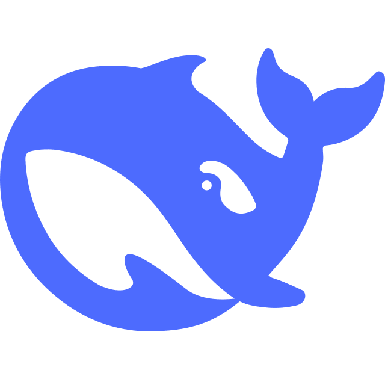
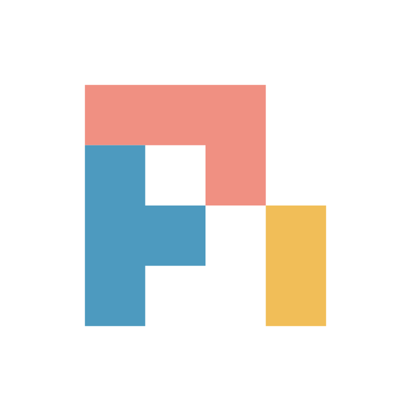

Token Efficiency
Cara hemat token di AI-native apps dan agentic coding workflow
Orvix.id × Road to DevFest Jakarta 2026

About Me

x.com/algonacci
github.com/algonacci
linkedin.com/eric-julianto
instagram.com/eric.juliantooo
Work Experience
Founder at Orvix.id (Now)
Research Analyst at Braincore (Dec 21 - Now)
Machine Learning Mentor at Bangkit Academy (Feb 23 - Jan 24)
SEO Intern at Dibilabs by Dibimbing.id (Mar 23 - Jun 23)
AI Developer Intern at ZettaByte (May 22 - Aug 22)
Education
- Hospitality & Tourism at Universitas Bunda Mulia
- Computer Science at Universitas Esa Unggul

Sprint Enablement
Token Cloud Credits dari Orvix
Yang Anda Dapat
| Kuota | 100 juta token per orang ≈ 8.000+ giliran agent dengan model default |
| Batas harian | 30 juta token per hari rem darurat, bukan target |
| Berlaku | sampai 1 November 2026, 23:59 WIB |
| Kecepatan | 20 request/menit, 3 request bersamaan |
| Endpoint | /v1 untuk aplikasi, /coding/v1 untuk coding agent |
| Model default | DeepSeek V4.1 Flash + 7 model lain, lihat slide berikutnya |

Gratis, tanpa kartu
Kuota ini disponsori Orvix untuk sprint. Tidak perlu top-up untuk memakainya.
Model yang Tersedia
Satu API key, ganti model cukup ubah parameter model. Dikelompokkan dari yang paling hemat kuota:
Hemat
 Muse Spark 1.3
Muse Spark 1.3 Qwen 3.8 Flash
Qwen 3.8 Flash GPT-5.6 Luna
GPT-5.6 Luna
Menengah

DeepSeek V4.1 Flash (default)- Hy3
 Gemini 3.8 Flash
Gemini 3.8 Flash
Premium
 GPT-5.6 Terra
GPT-5.6 Terra GPT-5.6 Sol
GPT-5.6 Sol
Pilih sesuai tugas
Mulai dari model hemat atau default. Naik ke premium hanya untuk tugas yang memang butuh.
Klaim dalam 3 Langkah

platform.orvix.id/e/ ROAD-TO-DEVFEST-JKT-2026
- Scan QR → masuk dengan email (magic link, tanpa password)
- Gabung campaign → kuota langsung aktif
- Buat API key
- untuk aplikasi: scope
ai:invoke - untuk coding agent: scope
coding:invoke
- untuk aplikasi: scope
API key = dompet
Jangan commit ke GitHub dan jangan dibagi ke orang lain.
Pakai di Aplikasi
OpenAI-compatible: SDK OpenAI (Python, JavaScript, dan lainnya) langsung jalan, cukup ganti base_url.
from openai import OpenAI
client = OpenAI(
base_url="https://api.orvix.id/v1",
api_key="orv-sk_live_...", # dari platform.orvix.id/api-keys
)
reply = client.chat.completions.create(
model="orvix/deepseek-v4.1-flash",
messages=[{"role": "user", "content": "Halo dari DevFest!"}],
)
print(reply.choices[0].message.content)Pakai di Coding Agent
Pasang plugin Orvix di harness favorit Anda:

opencode plugin add @orvix-id/opencode

pi install npm:@orvix-id/pi

omp plugin install @orvix-id/omp
Endpoint: https://api.orvix.id/coding/v1. Plugin yang mengurus sisanya, termasuk yang kita bahas setelah ini: session id untuk cache.
Kuota Dihitung Setara Gemini
Tiap model memotong kuota dengan laju berbeda. Token dari cache hanya dihitung 10%.
| Model | Kuota per giliran agent* | Giliran per hari (batas 30 jt) |
|---|---|---|
 Muse Spark 1.3 Muse Spark 1.3 |
2.777 | 10.803 |
 Qwen 3.8 Flash Qwen 3.8 Flash |
5.049 | 5.941 |
 GPT-5.6 Luna GPT-5.6 Luna |
7.068 | 4.244 |
| DeepSeek V4.1 Flash | 12.116 | 2.476 |
| Hy3 | 14.640 | 2.049 |
 Gemini 3.8 Flash Gemini 3.8 Flash |
25.241 | 1.188 |
| GPT-5.6 Terra |
68.908 | 435 |
| GPT-5.6 Sol |
172.144 | 174 |
* giliran agent rata-rata di Orvix: 142.750 token input (92% dari cache) + 688 token output, data 30 hari Oktober 2026. Tanpa cache, angkanya ±5,7× lebih besar.
Tech Talk
Token Efficiency
Sesi Ini
- Dasar: token itu apa
- Tiga cheat code token efficiency
- Prompt caching: cara kerja dan aturan mainnya
- Level aplikasi: AI-native apps
- Level agentic coding workflow: OpenCode, Pi, omp, dan pelajaran dari Orvix Coding
Intinya
Isi prompt sama persis, tagihan bisa beda 9×. Bedanya: cache kena atau tidak.
Buka Colab-nya Sekarang
go.braincore.id/ colab-token-efficiency
Semua demo di sesi ini ada di notebook. Kita bolak-balik slide ↔︎ Colab.
- Scan QR atau buka link di atas
- File → Save a copy in Drive biar bisa diedit
- Runtime → Run all, isi API key saat diminta
Belum punya API key?
Klaim dulu di slide Klaim dalam 3 Langkah. Bagian tokenizer, biaya ganti model, dan kuota bisa jalan tanpa key.
Dasar: Token
Model tidak membaca huruf
Teks → Token → Angka
"Halo DevFest Jakarta!"
│ tokenizer
▼
['Halo', ' Dev', 'Fest', ' Jakarta', '!'] ← 5 token
│ kamus ±200 ribu entri (o200k_base)
▼
[193254, 11674, 78104, 65994, 0] ← yang benar-benar dilihat model
│ model
▼
token ID jawaban → detokenize → teks jawabanSemua batasan dihitung dalam token:
- Harga: dijual per 1 juta token (MTok), seperti listrik per kWh.
Contoh Gemini 3.8 Flash: $0,75/MTok input, $3,75/MTok output - Context window: berapa token yang muat sekali kirim
- Rate limit dan kuota: termasuk kuota sprint Anda
Token Bukan Kata
Diukur dengan tokenizer o200k_base:
| Kata | Token | Dipotong jadi |
|---|---|---|
| development | 1 | development |
| pengembangan | 2 | peng · embangan |
| accountability | 2 | account · ability |
| mempertanggungjawabkan | 6 | mem · pert · anggung · jaw · ab · kan |
| Rp100.000 | 4 | Rp · 100 · . · 000 |
| 2026-10-17 | 6 | 202 · 6 · - · 10 · - · 17 |
Kalimat yang sama, permintaan bikin fungsi + unit test:
| Bahasa | Karakter | Token |
|---|---|---|
| English | 119 | 22 |
| Indonesia | 120 | 28 (+27%) |
Bukan berarti wajib English
Tapi untuk system prompt yang dikirim ribuan kali, 27% itu terasa.
Coba Sendiri
Ketik kalimat yang sama dalam English dan Indonesia, lalu bandingkan jumlah tokennya.
Format Data Juga Token
20 baris produk yang sama:
| Format | Token |
|---|---|
JSON rapi (indent=2) |
862 |
| JSON minified | 483 |
| CSV | 269 |
Untuk konteks yang hanya dibaca model
Kirim tabel sebagai CSV, bukan JSON rapi. 3,2× lebih hemat dan model tetap paham.
Coba Sendiri: Format Data
Copy ketiganya ke tiktokenizer.vercel.app, bandingkan jumlah tokennya. Datanya sama persis.
[
{
"id": 1,
"nama": "Kopi Susu Gula Aren",
"kategori": "Minuman",
"harga": 18000,
"stok": 42
},
{
"id": 2,
"nama": "Nasi Goreng Kampung",
"kategori": "Makanan",
"harga": 25000,
"stok": 15
},
{
"id": 3,
"nama": "Teh Tarik",
"kategori": "Minuman",
"harga": 12000,
"stok": 30
},
{
"id": 4,
"nama": "Mie Ayam Bakso",
"kategori": "Makanan",
"harga": 22000,
"stok": 8
},
{
"id": 5,
"nama": "Pisang Goreng",
"kategori": "Camilan",
"harga": 10000,
"stok": 25
}
][{"id":1,"nama":"Kopi Susu Gula Aren","kategori":"Minuman","harga":18000,"stok":42},{"id":2,"nama":"Nasi Goreng Kampung","kategori":"Makanan","harga":25000,"stok":15},{"id":3,"nama":"Teh Tarik","kategori":"Minuman","harga":12000,"stok":30},{"id":4,"nama":"Mie Ayam Bakso","kategori":"Makanan","harga":22000,"stok":8},{"id":5,"nama":"Pisang Goreng","kategori":"Camilan","harga":10000,"stok":25}]Habisnya di Input, Bukan Output
Data nyata traffic Orvix, 30 hari terakhir:
| Jenis request | Rata-rata input | Rata-rata output | Input dari cache |
|---|---|---|---|
| Kecil (< 5 rb token) | 2.774 | 240 | 69% |
| Menengah (5–50 rb) | 25.718 | 878 | 70% |
| Agent (≥ 50 rb) | 142.750 | 688 | 92% |
Pada agent, output cuma 0,5% dari total token
Yang Anda bayar adalah konteks yang dikirim ulang setiap giliran. Di situ caching bekerja.
Isi Basic Harness
read_file(path)
list_directory(path)
agent loopmesinnya, bukan tool
edit_file(path, old_text, new_text)output kecil
run_command(command)
grep(pattern, path)daripada baca semua
glob(pattern)
read_file(path, offset, limit)hemat input
update_plan(steps)
ask_user(question)hemat giliran
Contoh: Agent Benerin Bug Login
Input menumpuk tiap giliran. Output-nya? Cuma satu tool call.
masuk
input
➜
masuk
input
➜
sudah pernah dikirim, dikirim lagi baru di giliran ini output model: cuma tool call
3 Cheat Code Hemat Token
| Cheat code | Pertanyaannya | Contoh |
|---|---|---|
| 1. Kirim lebih sedikit | token apa yang sebenarnya tidak perlu? | CSV bukan JSON rapi, riwayat dipangkas, RAG hanya chunk relevan, max_tokens |
| 2. Jangan bayar dua kali | token apa yang dikirim ulang terus? | prompt caching, response cache |
| 3. Bayar lebih murah per token | model sebesar apa yang benar-benar perlu? | model kecil untuk tugas kecil, model besar saat perlu |
Untuk agent, cheat code 2 paling ngefek
92% input agent adalah token yang sudah pernah dikirim. Sisa sesi ini banyak membahas cheat code 2, tanpa melupakan 1 dan 3.
Prompt Caching
Cara kerja dan aturan main
Cara Kerjanya
Kalau awal prompt sama persis dengan request sebelumnya, bagian itu tidak dihitung ulang.
dari cache: murah dan cepat dihitung baru: harga penuh
$0,30
per MTok
$0,006
per MTok
DeepSeek V4.1 Flash, jam sibuk
Cache Bertahan Berapa Lama?
Chat dengan agent, lalu ditinggal ngopi sejam:
jam 10:00
❄️ cache miss (cold)
jam 10:00:30
🔥 cache hit (warm)
jam 11:00
❓ masih hit?
Request 3 masih dapat harga cache, atau bayar penuh lagi?
Jawabannya: Tergantung Provider
Cache punya umur, tiap provider beda:
| Provider | Umur cache | Request 3 (1 jam kemudian) |
|---|---|---|
| Claude (default) | 5 menit, timer di-reset tiap cache hit | ❄️ cold lagi |
| Claude (TTL 1 jam) | 1 jam, tapi biaya tulis cache 2× | ⚠️ pas di batas, anggap cold |
| Gemini (explicit) | TTL atur sendiri (default 1 jam), bayar simpan per jam | ✅ kalau TTL dibuat > 1 jam |
| Gemini (implicit) | otomatis, umurnya tidak dijamin | 🤷 bisa ya, bisa tidak |
| DeepSeek | otomatis, dibuang kalau nganggur (biasanya jam–hari) | ✅ kemungkinan besar masih |
Cache itu seperti makanan di meja prasmanan
Selama ada yang ambil, tetap disajikan. Nganggur kelamaan, dibereskan. Jeda panjang = mulai dari nol.
Sumber: dokumentasi caching Anthropic, Gemini API, DeepSeek (Okt 2026). Semua best-effort, tidak dijamin 100% hit.
Atur TTL di Kode
response = client.messages.create(
model="claude-opus-5-5",
max_tokens=1024,
system=[{
"type": "text",
"text": SYSTEM_PROMPT_PANJANG,
"cache_control": {"type": "ephemeral"}, # TTL 5 menit (default)
# "cache_control": {"type": "ephemeral", "ttl": "1h"} # TTL 1 jam, tulis cache 2×
}],
messages=[{"role": "user", "content": "Halo!"}],
)
print(response.usage.cache_creation_input_tokens) # warm-up: ditulis ke cache
print(response.usage.cache_read_input_tokens) # cache hitcache = client.caches.create(
model="gemini-3.8-flash",
config=types.CreateCachedContentConfig(
system_instruction=SYSTEM_PROMPT_PANJANG,
ttl="3600s", # default 1 jam kalau tidak diisi
),
)
response = client.models.generate_content(
model="gemini-3.8-flash",
contents="Halo!",
config=types.GenerateContentConfig(cached_content=cache.name),
)
client.caches.update( # perpanjang sebelum habis
name=cache.name,
config=types.UpdateCachedContentConfig(ttl="7200s"),
)response = client.chat.completions.create( # base_url="https://api.deepseek.com"
model="deepseek-flash",
messages=[
{"role": "system", "content": SYSTEM_PROMPT_PANJANG},
{"role": "user", "content": "Halo!"},
],
)
# Tidak ada parameter TTL: cache otomatis, dibuang kalau nganggur
print(response.usage.prompt_cache_hit_tokens) # cache hit
print(response.usage.prompt_cache_miss_tokens) # dihitung baruKode diambil dari dokumentasi resmi Anthropic, Google Gemini API, dan DeepSeek (Okt 2026).
Aturan #1: Prefix Harus Identik
Cache cocok dari depan. Satu karakter berubah di depan → semua di belakangnya dihitung ulang.
Banyak provider baru meng-cache di atas panjang minimum dan dalam blok token, jadi prompt yang pendek sering tidak ter-cache sama sekali.
Merusak cache ❌
[system: "Hari ini 17 Okt 10:31:07"]
[tools]
[riwayat chat]
[pesan baru]Jam berubah tiap request → 0% hit
Ramah cache ✅
[system: aturan tetap]
[tools: urutan tetap]
[riwayat chat]
[pesan baru + "waktu: 10:31"]Yang berubah ditaruh paling belakang
Aturan #2: Cache Tinggal di Satu Tempat
Cache disimpan di server provider yang melayani request Anda, untuk model itu, dalam jangka waktu terbatas.
- Ganti model di tengah sesi → cache mulai dari nol (mahal, lihat slide berikut)
- Load balancer yang melempar request acak ke banyak upstream → hit rate jatuh
- Sesi diam terlalu lama → cache kedaluwarsa
Ini masalah gateway, bukan cuma masalah prompt
Di Orvix, request yang satu sesi ditempel ke route yang sama (sticky routing). Detailnya di bagian agentic coding workflow.
Ganti ke Model Frontier 💸
Di tengah sesi agent (giliran 30, konteks 142 rb token): “Pakai model paling jago aja deh.”
cache warm
model
➜
cache kosong
lebih mahal
untuk satu giliran
Kenapa mahalnya dobel:
- Cache milik model lama, tidak ikut pindah → 142 rb token dihitung ulang dari nol
- Harga per token frontier jauh lebih tinggi → $10 vs $0,30 per MTok, 33×
Butuh model jago? Jangan pindahkan sesi yang sudah gemuk
Pilih model di awal sesi. Untuk sub-tugas yang butuh model frontier, buka sesi baru dengan konteks kecil, atau ringkas dulu sebelum ganti.
Input saja. DeepSeek jam sibuk; Claude Fable 5.1 input $10/MTok.
Cara Mengukur
Response OpenAI-compatible sudah memberi tahu:
Jadikan metrik
Kalau cache hit rate tidak pernah Anda lihat, Anda tidak tahu sedang membayar 1× atau 9×.
Level Aplikasi
AI-native apps: chatbot, asisten, RAG
Anatomi Request Aplikasi
Urutkan dari yang paling stabil ke yang paling sering berubah:
cache hit
Pembunuh Cache Diam-Diam 🔪
sort_keys=True
cached_tokens selalu 0 atau naik-turun tidak jelas, padahal user-nya sama.
Sebelum vs Sesudah
Sebelum ❌
Isi informasinya sama. Yang berubah cuma urutannya.
Cheat Code 1: Kirim Lebih Sedikit
| tail -50)
read_file(path, offset, limit))
Selain Prompt Cache
Satu request lewat beberapa titik. Tiap titik bisa punya cache sendiri:
request
model
Level Agentic Coding Workflow
OpenCode, Pi, omp
Agent Hidup dari Cache
Tiap giliran, agent mengirim seluruh percakapan lagi. Makin lama sesi, makin besar yang dikirim ulang:
$0,043
per giliran
$0,004
per giliran
pekerjaan sama persis
DeepSeek V4.1 Flash, jam sibuk, input saja
Satu Sesi, Satu Server
Cache tinggal di server yang melayani request. Dilempar acak = cache tidak ketemu.
Caranya:
- Harness mengirim session id di setiap request
- Gateway memakai session id itu untuk memilih upstream yang sama
- Kalau upstream mati, sesi pindah sekali, lalu menempel di tempat baru
Jebakan
Session id bisa dikirim lewat header atau body, tergantung harness. Kalau gateway membaca dari tempat yang salah, sticky routing mati diam-diam.
Tagihan & Kuota Harus Sadar Cache
usage
Harga contoh: DeepSeek V4.1 Flash, jam sibuk, input saja.
Kuota Tinggal 8%, Masih Bisa?
Kuota 10 jt, sudah terpakai 92%. Request berikutnya: sesi agent panjang, konteks 1 jt token, 92% dari cache.
semua dihitung baru
“kuota habis”
cache dihitung 10%
masih muat ±4 request lagi
Yang Kami Lakukan di Orvix Coding
Request kecil jangan merebut jalur agent
Harness mengirim request pembantu (judul sesi, ringkasan) paralel dengan request agent.
| Harness | Request pembantu | Request agent |
|---|---|---|
| OpenCode | tanpa tools, ~626 token | 12 tools |
| omp | tanpa tools, ~184 token | 11 tools |
| Pi | tidak ada | 4 tools |
Dulu request kecil ini menghabiskan slot concurrency, jadi agent-nya sendiri kena 429. Sekarang ada dua jalur: jalur kecil (tanpa tools, ≤ 4.096 token) dan jalur agent.
Jebakan Harness yang Mengubah Prefix
Kebiasaan Ramah Cache Saat Ngoding dengan Agent
- Satu tugas, satu sesi. Jangan bolak-balik membuka sesi baru untuk tugas yang sama.
- Jangan ganti model di tengah sesi. Cache terikat ke model.
- Jangan edit
AGENTS.mdatau aturan proyek di tengah sesi. Itu ada di awal prompt. - Jangan nyalakan atau matikan MCP/tools di tengah sesi. Daftar tools juga bagian awal prompt.
- Compact di batas tugas, bukan di tengah alur kerja.
- Jangan biarkan sesi menganggur lama lalu dilanjutkan. Cache bisa sudah kedaluwarsa.

Berlaku Juga untuk Kuota Sprint Ini
Token dari cache dihitung 10% di kuota DevFest
Satu giliran agent rata-rata di DeepSeek V4.1 Flash:
- tanpa cache: 68.851 token kuota
- dengan 92% cache: 12.116 token kuota
Prompt yang ramah cache = 5,7× lebih banyak giliran dari kuota yang sama.
Dan begitu aplikasi Anda dipakai orang dan tagihan datang dari provider, angka yang sama berubah jadi uang.
Ringkasan
- Model membaca token, bukan huruf. Bahasa, angka, dan format menentukan jumlahnya.
- Tiga cheat code: kirim lebih sedikit, jangan bayar dua kali, bayar lebih murah per token.
- Token habis di input, terutama pada agent: 92% cache, output cuma 0,5%.
- Cache cocok dari depan dan tinggal di satu tempat. Yang stabil di depan; butuh sticky routing.
- Ukur
cached_tokens. Agent: satu tugas, satu sesi, satu model.
Isi prompt sama persis, tagihan bisa beda 9×. Bedanya: cache kena atau tidak.

Klaim Kuota Anda
platform.orvix.id/e/ ROAD-TO-DEVFEST-JKT-2026
- 100 juta token, sampai 1 Nov 2026 23:59 WIB
/v1untuk aplikasi,/coding/v1untuk agent- Plugin OpenCode, Pi, omp:
@orvix-id/*
Q&A